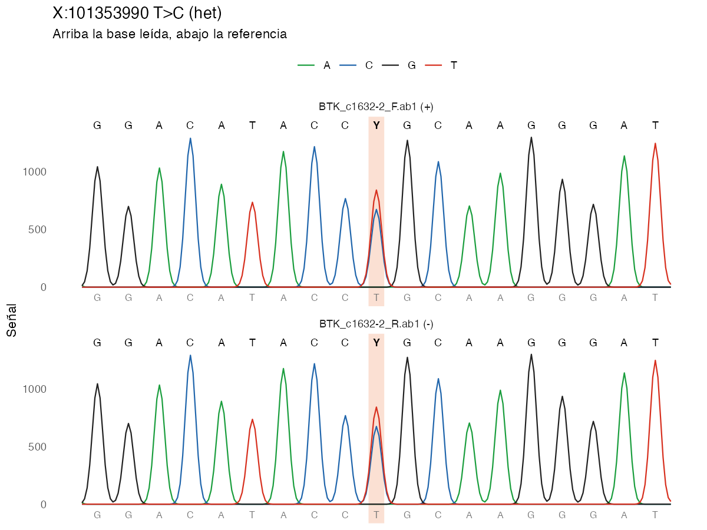

ieiprio encuentra, anota y prioriza variantes en genes de errores innatos de la inmunidad a partir de secuencias Sanger, FASTA, VCF o el texto de un informe.

Instalación
install.packages("pak")
pak::pak("Gentlenmoron/ieiprio")Con remotes también funciona.
remotes::install_github("Gentlenmoron/ieiprio")Ejemplo
library(ieiprio)
ab1 <- iei_ejemplo_sanger("het")
ref <- system.file("extdata", "btk_referencia.fa", package = "ieiprio")
v <- iei_sanger(ab1, gen = "BTK", sexo = "F", referencia = ref)
v[, c("gen", "chr", "pos", "ref", "alt", "genotipo", "qual", "ab", "lecturas")]
iei_cromatograma(v)#> BTK_c1632-2_F.ab1: hebra +, 461 bases alineadas en X:101353757-101354217, identidad 99.8%.
#> BTK_c1632-2_R.ab1: hebra -, 461 bases alineadas en X:101353758-101354218, identidad 99.8%.
#> # A tibble: 1 × 9
#> gen chr pos ref alt genotipo qual ab lecturas
#> <chr> <chr> <int> <chr> <chr> <chr> <dbl> <dbl> <int>
#> 1 BTK X 101353990 T C het 45 0.445 2Corre sin conexión. iei_ejemplo_sanger() escribe un par de cromatogramas .ab1 de un amplicón de BTK con la variante patogénica c.1632-2A>G en una portadora. iei_sanger() los alinea contra la referencia GRCh38 que trae el paquete y encuentra la variante en las dos hebras, con 45 % de la señal en el alelo alternativo. El cromatograma de arriba es la salida de iei_cromatograma().
Con conexión, iei_anotar() y iei_priorizar() completan el análisis. La variante queda en prioridad alta con su razón escrita punto por punto.
iei_priorizar(iei_anotar(v), fenotipo = c("agammaglobulinemia", "neumonía recurrente"))Entradas
| Entrada | Formato | Función |
|---|---|---|
| VCF |
.vcf, .vcf.gz, GRCh37 o GRCh38 |
iei_leer_vcf() |
| Cromatograma Sanger |
.ab1, .scf
|
iei_sanger() |
| FASTA |
.fa, .fasta
|
iei_sanger() |
| Secuencia escrita | Texto con las bases | iei_sanger() |
| Informe | PDF, Word o texto | iei_variantes() |

Funciones
| Función | Qué hace |
|---|---|
iei_analizar() |
Corre el flujo completo de un VCF y deja un reporte por muestra |
iei_leer_vcf(), iei_verificar_sexo()
|
Leer un VCF y comparar el sexo declarado con el del cromosoma X |
iei_filtrar(), iei_bitacora()
|
Filtrar por panel y calidad, con el registro de cada paso |
iei_cnv() |
CNV que trae el VCF cruzadas con el panel |
iei_sanger() |
Llamar variantes desde .ab1, .scf, FASTA o una secuencia escrita |
iei_cromatograma() |
Trazas alrededor de una variante, con la base leída y la de referencia |
iei_dotplot() |
Dot plot de una secuencia frente a otra o frente a la referencia |
iei_consenso() |
Unir lecturas directa y reversa en una secuencia |
iei_leer_ab1(), iei_leer_scf()
|
Leer cromatogramas |
iei_variantes(), iei_variante()
|
Variantes desde PDF, Word, texto o HGVS |
iei_anotar(), iei_gnomad()
|
Anotar con Ensembl VEP, ClinVar y gnomAD |
iei_filtrar_frecuencia() |
Descartar variantes comunes según la herencia del gen |
iei_priorizar(), iei_pesos()
|
Puntaje explicado y criterios ACMG por puntos |
iei_reporte() |
Reporte HTML de un paciente |
iei_exportar(), iei_phenopacket(), iei_granges()
|
Excel, VCF, BED, Phenopacket o GRanges
|
iei_buscar_fenotipo(), iei_buscar_hpo()
|
Genes del panel por parecido con el fenotipo |
iei_validar_fenotipo() |
Medir la búsqueda por fenotipo con casos simulados |
iei_gen() |
Ficha de un gen con sus variantes de ClinVar |
iei_circos(), iei_cariograma()
|
Panel, candidatos o variantes sobre el genoma |
iei_panel(), iei_buscar_gen(), iei_fuentes()
|
Panel de genes y versiones de los datos |
iei_app() |
Aplicación Shiny |
Las guías están en https://gentlenmoron.github.io/ieiprio/. Primeros pasos recorre cada entrada, Interpretación de resultados explica el puntaje y la búsqueda por fenotipo, Método y parámetros trae los cálculos y Casos de ejemplo tres análisis completos.
Herramienta de apoyo e investigación. No es un informe diagnóstico ni reemplaza la clasificación ACMG/AMP hecha por un especialista.
Cita
Rios Vasquez Y, Pavini N (2026). ieiprio: Priorización de variantes en genes de errores innatos de la inmunidad. Paquete de R versión 1.0.0. https://github.com/Gentlenmoron/ieiprio
citation("ieiprio") devuelve la referencia en BibTeX. El paquete se distribuye con licencia MIT.